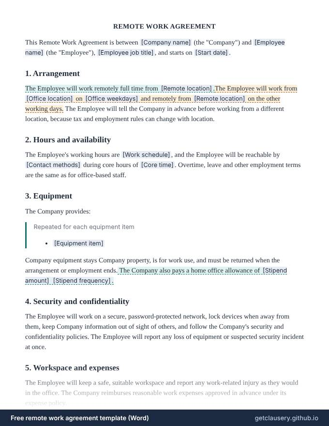

Remote work agreement template — free, editable .docx
A remote work agreement for fully remote or hybrid arrangements: where and when the employee works, how to reach them, the equipment the company provides, an optional home office allowance, security and confidentiality, expenses, and how the arrangement is reviewed or ended.

Free, with unlimited documents and no sign-up. Your answers stay in your browser. Who it is for: HR teams and managers setting up remote or hybrid work for an employee, and employees who want the arrangement in writing.
Reviewed by Clausery editors · Updated · Word (.docx) · Free to use and adapt
Need more than one? Download all 87 templates as one .zip file.
What is in the remote work agreement
- Fully remote or hybrid, with office days
- Remote location and telling the company before moving
- Working hours, core time and contact methods
- Equipment provided and its return
- Optional home office allowance
- Security and confidentiality
- Workspace safety and expenses
- Review and notice to end the arrangement
Read the full template
This is the complete wording. [Labels] are filled in from your answers, and highlighted text only appears when it applies; hover over it to see when.
REMOTE WORK AGREEMENT
This Remote Work Agreement is between [Company name] (the "Company") and [Employee name] (the "Employee"), [Employee job title], and starts on [Start date].
1. Arrangement
The Employee will work remotely full time from [Remote location].The Employee will work from [Office location] on [Office weekdays] and remotely from [Remote location] on the other working days. The Employee will tell the Company in advance before working from a different location, because tax and employment rules can change with location.
2. Hours and availability
The Employee's working hours are [Work schedule], and the Employee will be reachable by [Contact methods] during core hours of [Core time]. Overtime, leave and other employment terms are the same as for office-based staff.
3. Equipment
The Company provides:
Repeated for each equipment item
- [Equipment item]
Company equipment stays Company property, is for work use, and must be returned when the arrangement or employment ends. The Company also pays a home office allowance of [Stipend amount] [Stipend frequency].
4. Security and confidentiality
The Employee will work on a secure, password-protected network, lock devices when away from them, keep Company information out of sight of others, and follow the Company's security and confidentiality policies. The Employee will report any loss of equipment or suspected security incident at once.
5. Workspace and expenses
The Employee will keep a safe, suitable workspace and report any work-related injury as they would in the office. The Company reimburses reasonable work expenses approved in advance under its expense policy.
6. Review and ending
The Company will review the arrangement [Review frequency]. Either side may end it by giving [Notice days] days' written notice, after which the Employee returns to working from [Office location]. This agreement does not change any other term of the Employee's employment.
Company: ____________________________ By: [Manager name] Date: ______________
Employee: ____________________________ [Employee name] Date: ______________
The questions you answer
Clausery turns the template into a short questionnaire. Optional parts only appear when they apply.
| Question | Type | Asked when |
|---|---|---|
| Company name | Short text | Always |
| Employee name | Short text | Always |
| Employee job title | Short text | Always |
| Start date | Date | Always |
| Is fully remote | Yes / no | Always |
| Remote location | Short text | Always |
| Office location | Short text | Always |
| Office weekdays | Short text | If “Is fully remote” is no |
| Work schedule | Short text | Always |
| Contact methods | Short text | Always |
| Core time | Short text | Always |
| Equipment items For each item: Equipment item | Repeating group | Always |
| Has stipend | Yes / no | Always |
| Stipend amount | Money | If “Has stipend” is yes |
| Stipend frequency | Short text | If “Has stipend” is yes |
| Review frequency | Short text | Always |
| Notice days | Number | Always |
| Manager name | Short text | Always |
Prefer to start from your own wording? Download the Word file, edit it, keep the {tags}, and upload it to Clausery. See the template syntax.
Questions
What should a remote work agreement include?
Where the employee works, their hours and availability, the equipment provided, security rules, expenses, and how the arrangement can be reviewed or ended. Everything else about the job stays the same.
Why does the work location matter?
Working from another state or country can change payroll tax, employment law and insurance. The agreement asks the employee to tell the company before working from somewhere new.
Can the company end a remote work arrangement?
This template lets either side end it with notice, after which the employee returns to the office. Check any local rules or contract terms that say otherwise.
Guide: How to write a remote work agreement (free template)
Related templates
Browse all 87 free templates by category
This template is a general sample and not legal advice. Laws vary by jurisdiction; have it reviewed before use.
Helpful?